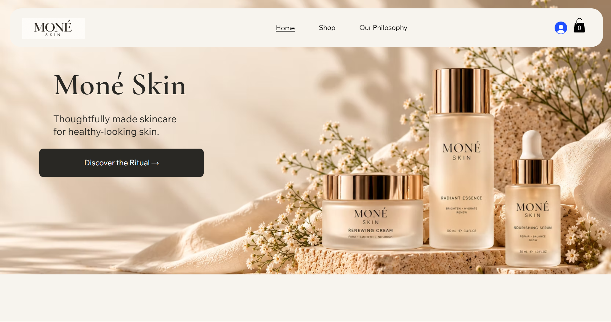
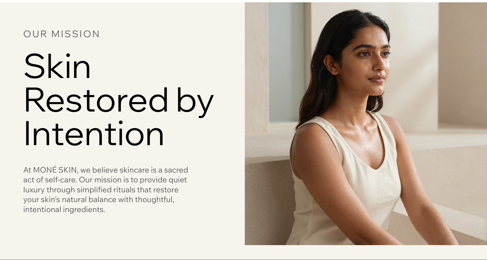
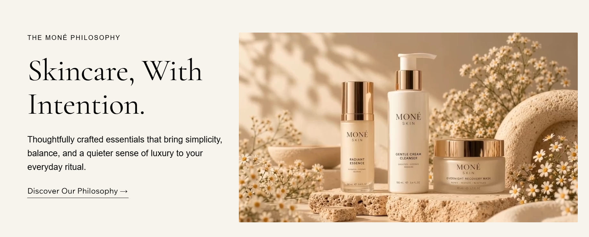
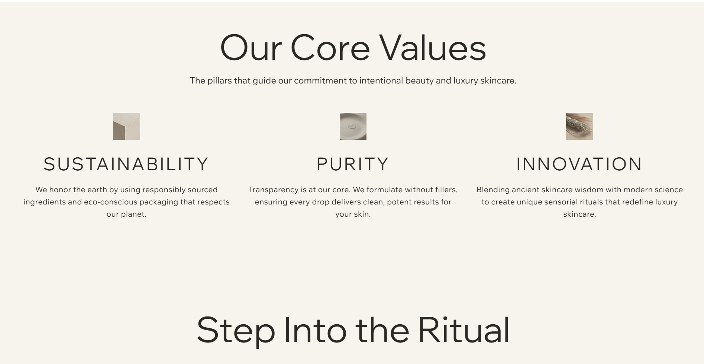
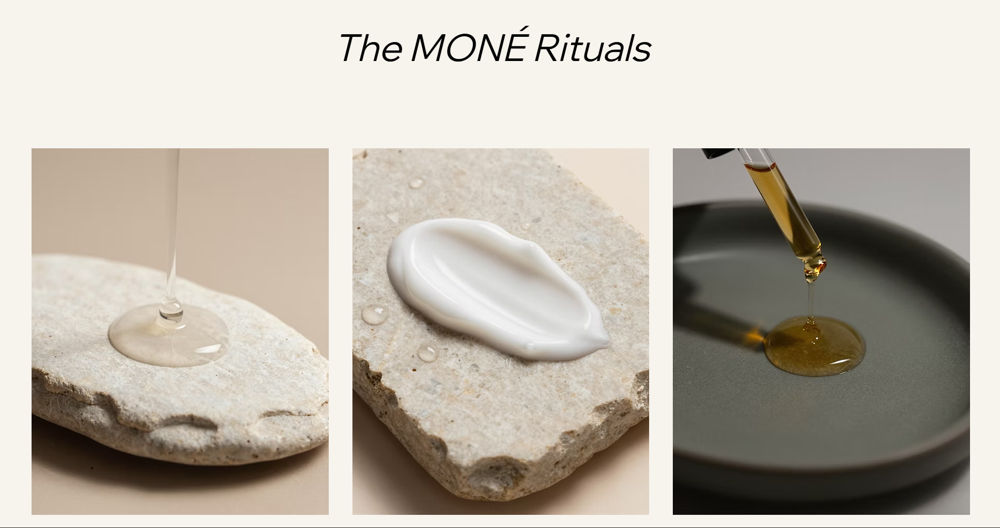
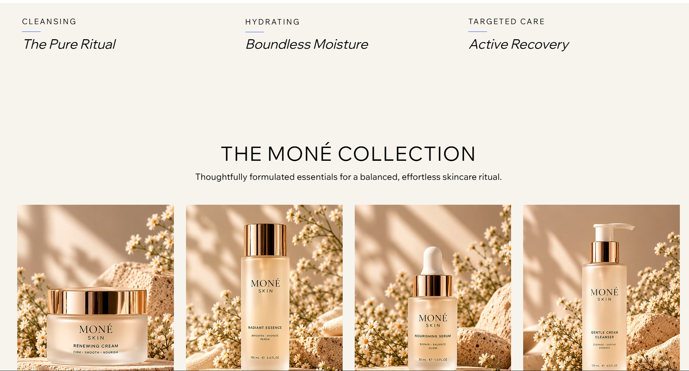
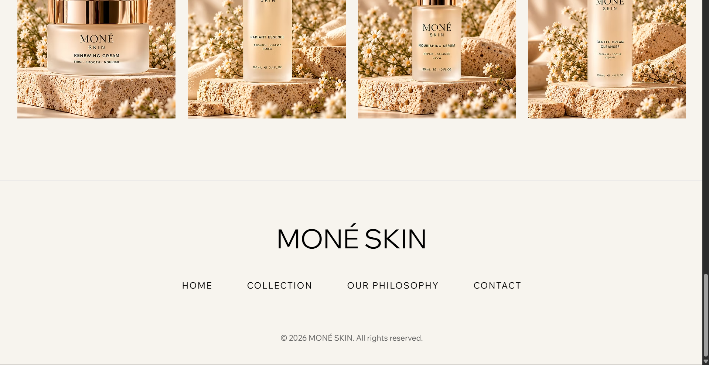

Sustainability
Responsible sourcing and eco-conscious packaging are presented as part of the brand's commitment to the planet.
RASAM DIGITAL PORTFOLIO / CASE STUDY 01
A refined digital experience for a modern skincare brand.
01 — The Beginning
THE BRAND
Exploring the brand's mission and philosophy through a calm, elegant, and minimal visual direction.


CHAPTER 03 / THE BRAND FOUNDATION
Three principles presented in the MONÉ Skin website, shaping the brand's visual and editorial identity.
Responsible sourcing and eco-conscious packaging are presented as part of the brand's commitment to the planet.
A focus on transparency and simplified formulations communicates the brand's approach to skincare.
The combination of traditional skincare inspiration and modern science shapes the brand's philosophy.

THE EXPERIENCE
A visual presentation of the skincare ritual experience, supported by imagery and editorial composition.

THE COLLECTION
Presenting the product collection as a clear and accessible shopping overview.

BEHIND THE DESIGN
A closer look at the visual choices behind the project: typography, color palette, alignment, spacing, and composition.
Ivory, warm beige, champagne, soft gold, and deep cocoa.
A refined serif direction paired with readable supporting text.
Minimal composition with a calm, premium skincare atmosphere.

END OF CASE STUDY
A focused website design project shaped by visual refinement, layout decisions, and a premium skincare aesthetic.
Project scope: a time-limited website design exercise. Product detail pages and further functionality were outside the completed project scope.